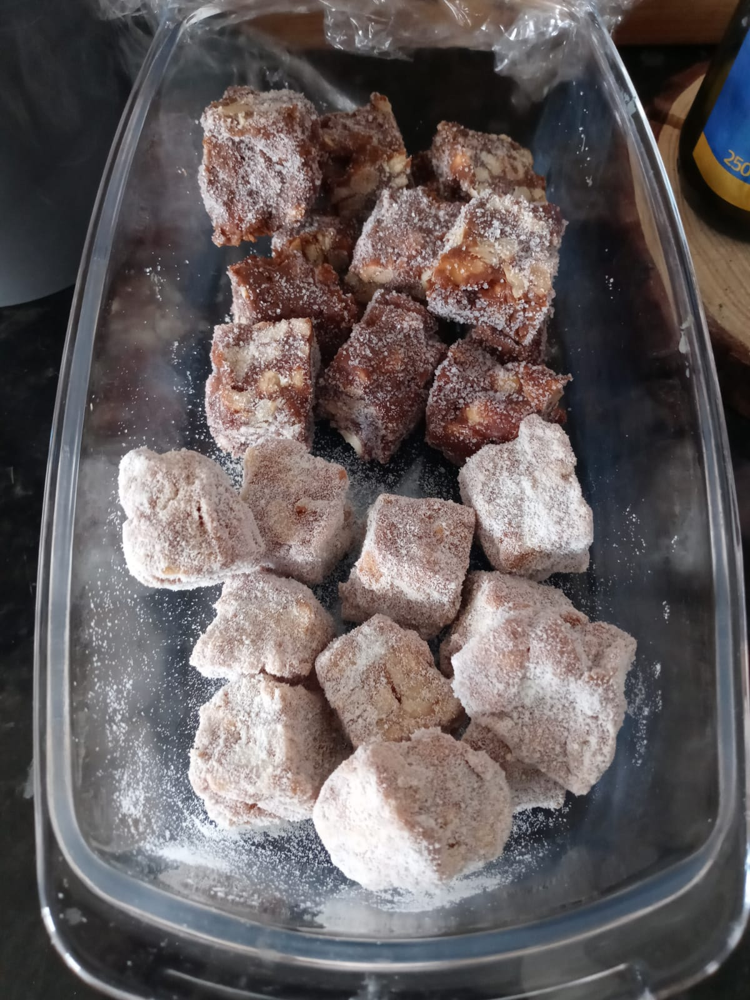

Back to recipes
Pé de Moça

Description
Pé de moça is a traditional Brazilian confection, essentially a softer, creamier variation of the classic pé de
moleque. It blends roasted peanuts with a caramel-like, fudge-like base (often made with condensed milk),
resulting in a chewy, melt-in-your-mouth texture. Here we have two variations of the recipe, one made with
powdered milk and the other with powdered chocolate and a bit of cinnamon.
Ingredients
- 500 g peanuts
- 1 cup sugar
- 2 tablespoons butter
- 1 can condensed milk
- 4 tablespoons powdered milk (optional)
- 2 tablespoons chocolate powder (optional)
- 1 teaspoon cinnamon (optional)
Steps
- Roast the peanuts, then set them aside
- Caramelize the sugar
- Add the butter and stir until melted
- Add the roasted peanuts and coat them evenly with the caramelized sugar
- Stir in the condensed milk
- Cook, stirring constantly, until the mixture reaches a thick, fudge-like consistency, then turn off the
heat.
- Let the mixture cool at room temperature for about 3 hours. Once fully cooled, cut into pieces and dust with
sugar before serving
Variants
- Optional (Milk Version): Stir in the 4 tablespoons of powdered milk and continue cooking until the mixture
reaches a thick, fudge-like consistency.
- Optional (Chocolate Version): Stir in the 2 tablespoons of chocolate powder and 1 teaspoon of cinnamon, then
continue cooking until the mixture reaches a thick, fudge-like consistency.